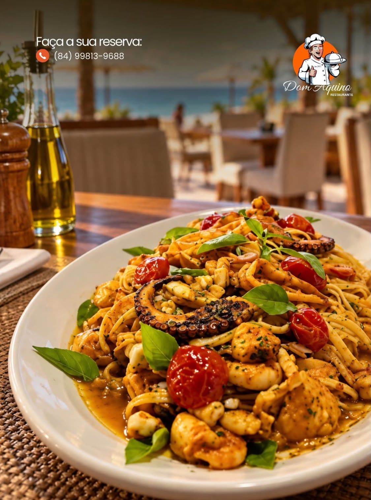
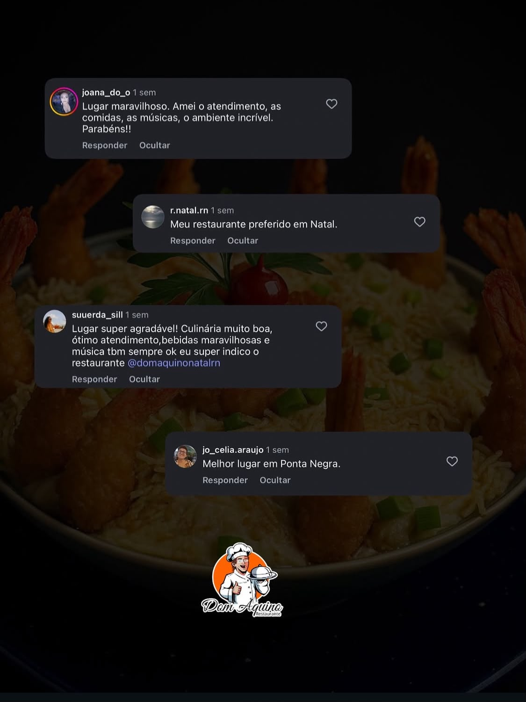
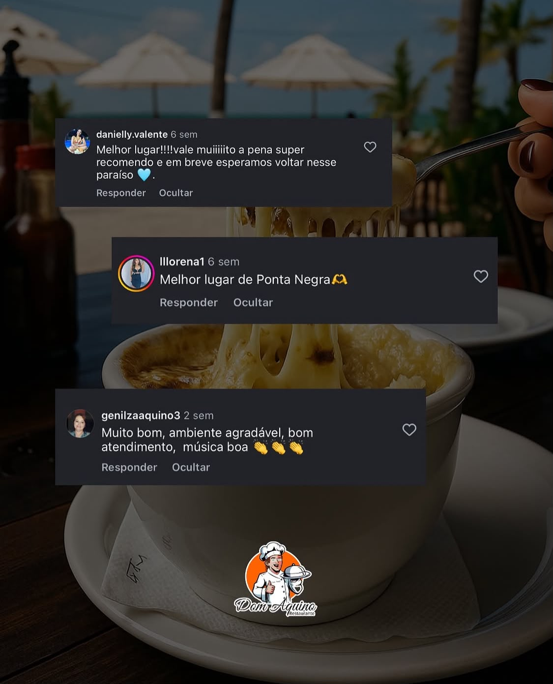

★★★★★
“Lugar maravilhoso. Amei o atendimento, as comidas, as músicas, o ambiente incrível!”
📱 (84) 98631-2222 • Ponta Negra, Natal/RN
Um ambiente acolhedor e pé na areia com piscina liberada para clientes, vista panorâmica privilegiada para o Morro do Careca, frutos do mar frescos e coquetelaria autoral.
O Dom Aquino Hotel & Gastronomia nasceu para oferecer o equilíbrio perfeito entre o ritmo relaxante das férias e a excelência da gastronomia potiguar.
Localizado na Praia de Ponta Negra, nosso espaço é arejado, seguro e banhado pela brisa do Atlântico. Aqui, famílias, casais e viajantes desfrutam de um almoço tranquilo, descansam à beira da piscina e contemplam o pôr do sol mais bonito de Natal brindando com drinks autorais.
Situado a poucos passos da praia de Ponta Negra, com acesso fácil e vista direta para o Morro do Careca.
A piscina do complexo está à sua disposição. Venha almoçar, dê um mergulho e relaxe nas espreguiçadeiras.
Pratos fartos e selecionados de camarão, polvo grelhado, peixes frescos e o melhor da tradição do sertão potiguar.
Espaço preparado para receber celebrações de aniversário, encontros em família e mini-weddings com vista para o mar.
Preparamos cada detalhe para você passar o dia inteiro com total conforto, hospitalidade e bem-estar.
 Deck & Coquetelaria
Deck & Coquetelaria
O fim de tarde no Dom Aquino é um espetáculo à parte. Saboreie coquetéis clássicos e autorais enquanto o sol se põe no horizonte do mar potiguar.
 Piscina & Lazer
Piscina & Lazer
Nossos clientes têm acesso livre à piscina com deck. Relaxe na água morna sob o sol de Natal enquanto seus pedidos são servidos na mesa.
.jpeg) Vista Panorâmica
Vista Panorâmica
Desfrute de uma das vistas mais disputadas de Natal. O cenário natural perfeito para fotos inesquecíveis e momentos de puro descanso.
Ingredientes frescos e pratos generosos preparados com consultoria de chef para encantar o seu paladar.
 Especialidade da Casa
Especialidade da Casa
A união autêntica dos maiores sabores do Rio Grande do Norte: risoto cremoso gratinado com camarões selecionados, carne de sol artesanal desfiada na manteiga da terra e macaxeira frita dourada e crocante.

Frutos do MarMassa artesanal fresca salteada no azeite extravirgem com tentáculos de polvo grelhados no ponto perfeito, camarões graúdos, anéis de lula, tomates cereja assados e manjericão fresco.
Coquetelaria Autoral
Carta exclusiva de coquetéis refrescantes preparados para harmonizar com a praia: Piña Colada artesanal com flor cítrica, caipifrutas com frutas regionais (caju, maracujá e cajá) e gins tropicais.
Nossa equipe envia pelo WhatsApp a carta de petiscos, pratos principais, peixes do dia, pizzas noturnas e bebidas.
Feitas diariamente na nossa cozinha para finalizar sua refeição com delicadeza e sabor.
.jpeg)
A mais tradicional sobremesa nordestina: bananas maduras flambadas na manteiga de garrafa com queijo de manteiga maçaricado, canela aromática e sorvete com cereja.
Fatia alta de abacaxi caramelizado e maçaricado, servido quente com sorvete artesanal derretendo e canela de frente para as águas de Ponta Negra.
.jpeg)
Bolo quente de chocolate nobre com centro líquido cremoso, acompanhado de sorvete de baunilha e calda de chocolate suave.
.jpeg)
Textura sedosa e delicada, feito com a receita tradicional da casa e coberto com calda dourada de caramelo brilhante.
Veja o que clientes e visitantes dizem sobre nossa gastronomia, atendimento e atmosfera nas redes sociais:

“Lugar maravilhoso. Amei o atendimento, as comidas, as músicas, o ambiente incrível!”

“Melhor lugar de Ponta Negra! Vale muito a pena, em breve esperamos voltar.”

“Eu recomendo, sou fã deste restaurante. Pratos maravilhosos e ótimo atendimento.”
Estamos no coração de Ponta Negra, a passos da praia. Navegue no mapa interativo e trace sua rota até o Dom Aquino:
Segunda a Domingo • 11:00 às 23:00 (Ininterrupto)
Rua Pastor Rodolfo Beuttenmuller, 9045 A • Natal/RN
Disponível para clientes que consomem no restaurante
Fácil acesso de Uber/táxi e vagas na vizinhança
Para garantir uma mesa com a melhor vista para o mar ou tirar dúvidas sobre o local, preencha abaixo ou fale direto no WhatsApp.